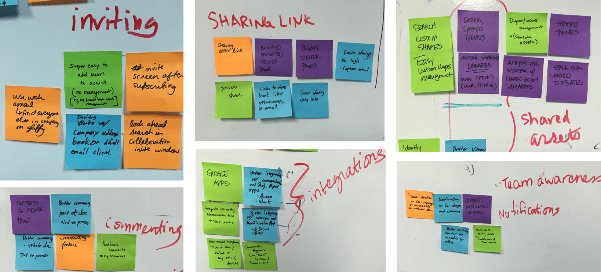
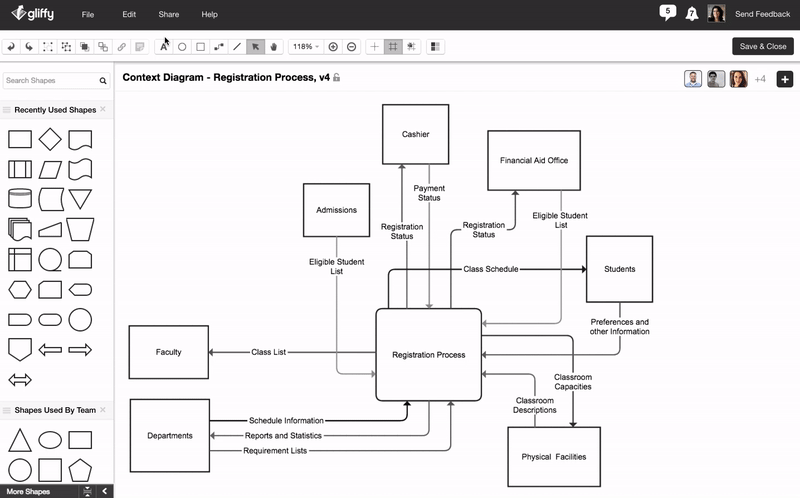
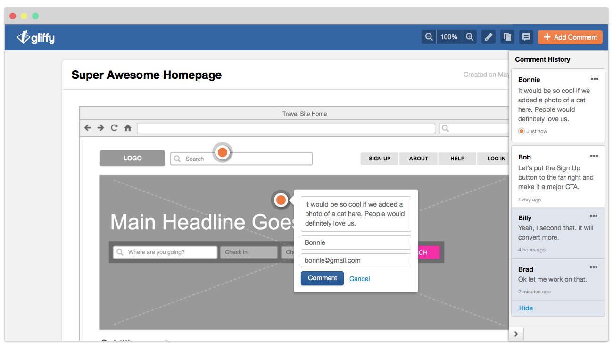
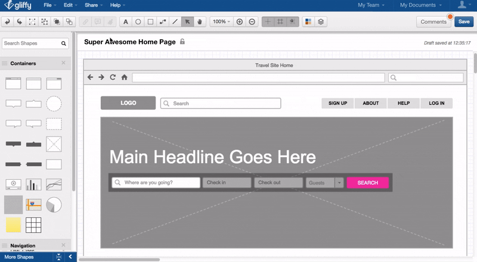
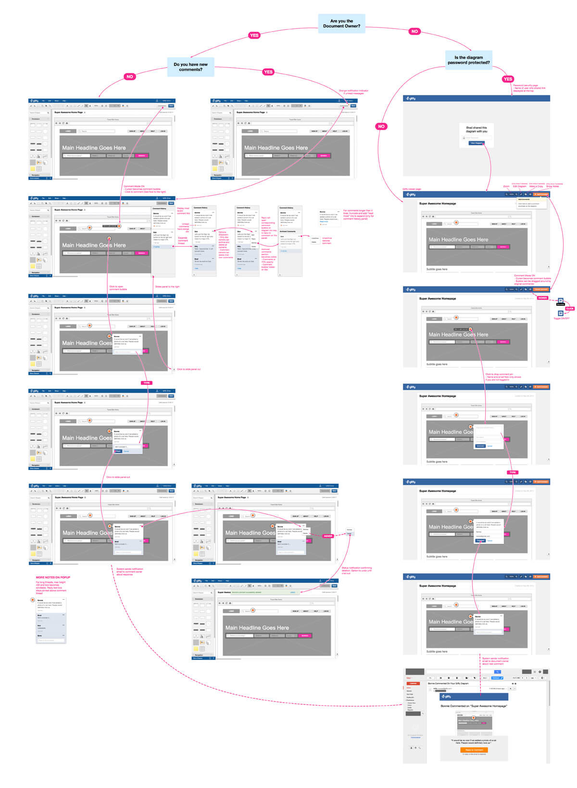

Gliffy
Gliffy makes a SaaS diagramming web app used by thousands of businesses. During my time there, I designed new product features, growth hack features, marketing materials, and performed user research.
www.gliffy.comGliffy makes a SaaS diagramming web app used by thousands of businesses. During my time there, I designed new product features, growth hack features, marketing materials, and performed user research.
www.gliffy.com
Gliffy Online was a mature product and our company was looking for ideas to improve its overall collaboration experience. I spent some time researching our customers and working with other product managers, UX designer, and engineers to strategically come up with new feature concepts for the product.
Improve product stickiness, especially for multi-user accounts.
Team implemented several new features in Gliffy that would increase collaboration and user retention rate.
I interviewed a handful of existing Gliffy customers and another handful of potential customers to get insight on their workflow and how they choose certain products to use for work.
Customers were not aware of the features in the Gliffy that could help with collaboration.
Customers were using multiple tools with Gliffy to hack together work-arounds to get simple tasks done.
People don't work alone and it was hard for users to share their work with colleagues on Gliffy.
Customers were creating individual Gliffy accounts within the same company rather than making team accounts within one organization.
All product managers and UX designers gathered to create an affinity diagram of potential product features that would address some of the problems we found in our earlier user research findings.
We voted on our favorite ideas and decided we would wireframe 5 features to show to users in our next round of user interviews, such as in-app commenting, Google drive integration, etc.
I created an extensive low fidelity prototype in Invision that walks through the 5 different features that our team chose to test at the end of our brainstorm session. The plan was to show this prototype to users.
I performed live user testing with the prototype I created on 8 different Gliffy customers to see how valuable the new features would be to them. I also put together a survey in SurveyMonkey to send out to about 19,000 of our paying users to vote on their most desired features.
I interviewed and showed our prototype to 8 different customers.
I sent a Max-Diff survey to all 19,564 paying Gliffy Online users.
Users responded well to a few of our concepts, particularly commenting, private link sharing, and Google Drive integration. Our team decided we would move ahead with designing and implementing these 3 features.
I mainly worked on designing the new commenting feature. I created the final visual mockup and prototype for our developers to implement. The designs included final touches and the various states and edgecases users might encounter.
  